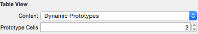
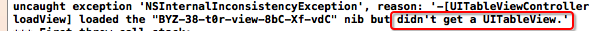
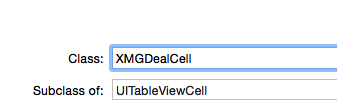
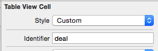
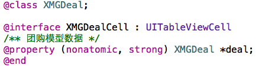

UITableView
tableView性能优化 - cell的循环利用方式1
/**
* 什么时候调用：每当有一个cell进入视野范围内就会调用
*/
- (UITableViewCell *)tableView:(UITableView *)tableView cellForRowAtIndexPath:(NSIndexPath *)indexPath
{
// 0.重用标识
// 被static修饰的局部变量：只会初始化一次，在整个程序运行过程中，只有一份内存
static NSString *ID = @"cell";
// 1.先根据cell的标识去缓存池中查找可循环利用的cell
UITableViewCell *cell = [tableView dequeueReusableCellWithIdentifier:ID];
// 2.如果cell为nil（缓存池找不到对应的cell）
if (cell == nil) {
cell = [[UITableViewCell alloc] initWithStyle:UITableViewCellStyleDefault reuseIdentifier:ID];
}
// 3.覆盖数据
cell.textLabel.text = [NSString stringWithFormat:@"testdata - %zd", indexPath.row];
return cell;
}
tableView性能优化 - cell的循环利用方式2
- 定义一个全局变量
// 定义重用标识
NSString *ID = @"cell";
- 注册某个标识对应的cell类型
// 在这个方法中注册cell
- (void)viewDidLoad {
[super viewDidLoad];
// 注册某个标识对应的cell类型
[self.tableView registerClass:[UITableViewCell class] forCellReuseIdentifier:ID];
}
- 在数据源方法中返回cell
- (UITableViewCell *)tableView:(UITableView *)tableView cellForRowAtIndexPath:(NSIndexPath *)indexPath
{
// 1.去缓存池中查找cell
UITableViewCell *cell = [tableView dequeueReusableCellWithIdentifier:ID];
// 2.覆盖数据
cell.textLabel.text = [NSString stringWithFormat:@"testdata - %zd", indexPath.row];
return cell;
}
tableView性能优化 - cell的循环利用方式3
在storyboard中设置UITableView的Dynamic Prototypes Cell 
设置cell的重用标识

在代码中利用重用标识获取cell
// 0.重用标识
// 被static修饰的局部变量：只会初始化一次，在整个程序运行过程中，只有一份内存
static NSString *ID = @"cell";
// 1.先根据cell的标识去缓存池中查找可循环利用的cell
UITableViewCell *cell = [tableView dequeueReusableCellWithIdentifier:ID];
// 2.覆盖数据
cell.textLabel.text = [NSString stringWithFormat:@"cell - %zd", indexPath.row];
return cell;
错误将UIViewController当做UITableViewController来用

UITableView的常见设置
// 分割线颜色
self.tableView.separatorColor = [UIColor redColor];
// 隐藏分割线
self.tableView.separatorStyle = UITableViewCellSeparatorStyleNone;
// tableView有数据的时候才需要分割线
// 开发小技巧:快速取消分割线
self.tableView.tableFooterView = [[UIView alloc] init];
UITableViewCell的常见设置
// 取消选中的样式(常用) 让当前 cell 按下无反应
cell.selectionStyle = UITableViewCellSelectionStyleNone;
// 设置选中的背景色
UIView *selectedBackgroundView = [[UIView alloc] init];
selectedBackgroundView.backgroundColor = [UIColor redColor];
cell.selectedBackgroundView = selectedBackgroundView;
// 设置默认的背景色
cell.backgroundColor = [UIColor blueColor];
// 设置默认的背景色
UIView *backgroundView = [[UIView alloc] init];
backgroundView.backgroundColor = [UIColor greenColor];
cell.backgroundView = backgroundView;
// backgroundView的优先级 > backgroundColor
// 设置指示器
// cell.accessoryType = UITableViewCellAccessoryDisclosureIndicator;
cell.accessoryView = [[UISwitch alloc] init];
自定义cell
等高的cellstoryboard自定义cell- 1.创建一个继承自UITableViewCell的子类，比如XMGDealCell
 - 2.在storyboard中
- 往cell里面增加需要用到的子控件

- 设置cell的重用标识
 - 设置cell的class为XMGDealCell

- 往cell里面增加需要用到的子控件
- 3.在控制器中
- 利用重用标识找到cell
- 给cell传递模型数据

- 4.在XMGDealCell中
- 将storyboard中的子控件连线到类扩展中

- 需要提供一个模型属性，重写模型的set方法，在这个方法中设置模型数据到子控件上

- 将storyboard中的子控件连线到类扩展中
- 1.创建一个继承自UITableViewCell的子类，比如XMGDealCell
xib自定义cell- 1.创建一个继承自UITableViewCell的子类，比如XMGDealCell
- 2.创建一个xib文件（文件名建议跟cell的类名一样），比如XMGDealCell.xib
- 拖拽一个UITableViewCell出来
- 修改cell的class为XMGDealCell
- 设置cell的重用标识
- 往cell中添加需要用到的子控件
- 3.在控制器中
- 利用registerNib...方法注册xib文件
- 利用重用标识找到cell（如果没有注册xib文件，就需要手动去加载xib文件）
- 给cell传递模型数据
- 4.在XMGDealCell中
- 将xib中的子控件连线到类扩展中
- 需要提供一个模型属性，重写模型的set方法，在这个方法中设置模型数据到子控件上
- 也可以将创建获得cell的代码封装起来（比如cellWithTableView:方法）
- 1.创建一个继承自UITableViewCell的子类，比如XMGDealCell
代码自定义cell(使用frame)- 1.创建一个继承自UITableViewCell的子类，比如XMGDealCell
- 在initWithStyle:reuseIdentifier:方法中
- 添加子控件
- 设置子控件的初始化属性（比如文字颜色、字体）
- 在layoutSubviews方法中设置子控件的frame
- 需要提供一个模型属性，重写模型的set方法，在这个方法中设置模型数据到子控件
- 在initWithStyle:reuseIdentifier:方法中
- 2.在控制器中
- 利用registerClass...方法注册XMGDealCell类
- 利用重用标识找到cell（如果没有注册类，就需要手动创建cell）
- 给cell传递模型数据
- 也可以将创建获得cell的代码封装起来（比如cellWithTableView:方法）
- 1.创建一个继承自UITableViewCell的子类，比如XMGDealCell
代码自定义cell(使用autolayout)- 1.创建一个继承自UITableViewCell的子类，比如XMGDealCell
- 初始化代码
- (instancetype)initWithTableView:(UITableView *)tableView
{
if (self = [super init]) {
ZJCTableViewCell *cell = [tableView dequeueReusableCellWithIdentifier:@"cell"];
if (cell == nil) {
cell = [[ZJCTableViewCell alloc] initWithStyle:UITableViewCellStyleDefault reuseIdentifier:@"cell"];
}
return cell;
}
return self;
}
在initWithStyle:reuseIdentifier:方法中
- 添加子控件
- 添加子控件的约束（建议使用
Masonry） - 设置子控件的初始化属性（比如文字颜色、字体）
- 需要提供一个模型属性，重写模型的set方法，在这个方法中设置模型数据到子控件
2.在控制器中
- 利用registerClass...方法注册XMGDealCell类
- 利用重用标识找到cell（如果没有注册类，就需要手动创建cell）
- 给cell传递模型数据
- 也可以将创建获得cell的代码封装起来（比如cellWithTableView:方法）
非等高的cell
- xib自定义cell
- storyboard自定义cell
- 代码自定义cell（frame）
代码自定义cell（Autolayout）
数据刷新方法
- 重新刷新屏幕上的所有cell
[self.tableView reloadData]; - 刷新特定行的cell
[self.tableView reloadRowsAtIndexPaths:@[ [NSIndexPath indexPathForRow:0 inSection:0], [NSIndexPath indexPathForRow:1 inSection:0] ] withRowAnimation:UITableViewRowAnimationLeft]; - 插入特定行数的cell
[self.tableView insertRowsAtIndexPaths:@[ [NSIndexPath indexPathForRow:0 inSection:0], [NSIndexPath indexPathForRow:1 inSection:0] ] withRowAnimation:UITableViewRowAnimationLeft]; - 删除特定行数的cell
[self.tableView deleteRowsAtIndexPaths:@[ [NSIndexPath indexPathForRow:0 inSection:0], [NSIndexPath indexPathForRow:1 inSection:0] ] withRowAnimation:UITableViewRowAnimationLeft];
数据刷新的原则
- 通过修改模型数据，来修改tableView的展示
- 先修改模型数据
- 再调用数据刷新方法
- 不要直接修改cell上面子控件的属性